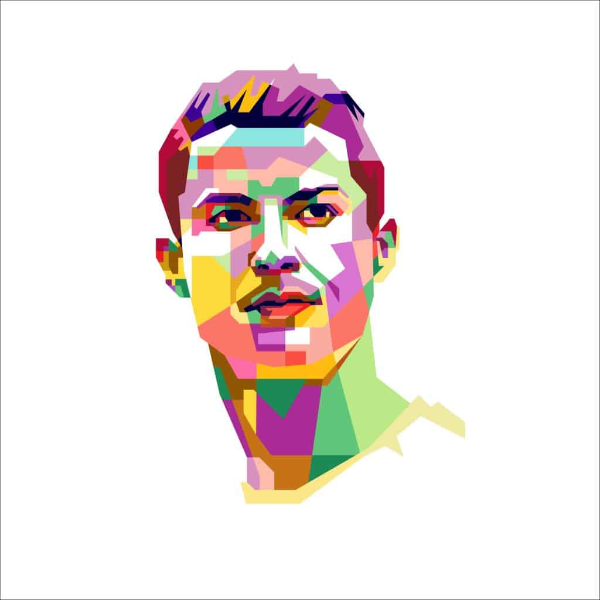

 כריסטיאנו רונאלדו הוא כדורגלן פורטוגלי אשר משחק בעמדת החלוץ או בעמדת הקיצוני בקבוצת הכדורגל האיטלקית יובנטוס. בנוסף רונאלדו משחק בנבחרת הכדורגל הלאומית של פורטוגל בה הוא גם משמש בתור הקפטן. כריסטיאנו רונאלדו נולד וגדל בעיר פונשל אשר שוכנת באיי מדירה. את תחילת הדרך המקצוענית שלו עשה רונאלדו בקבוצת הכדורגל הפורטוגלית ספורטינג ליסבון, ואת הופעת הבכורה שלו בקבוצה עשה בגיל 17 בלבד. קפיצת המדרגה המשמעותית ביותר בקריירה של רונאלדו התרחשה כאשר נערך משחק ידידות בין קבוצת הפאר האנגלית מנצ'סטר יונייטד ובין ספורטינג ליסבון. המאמן האגדי של מנצ'סטר יונייטד באותה תקופה אלכס פרגוסון התרשם מאוד מהיכולות של הנער הצעיר והחליט להחתים אותו בקבוצה. עלות הקנייה של רונאלדו מספורטינג ליסבון למנצ'סטר יונייטד עמדה על 15 מיליון יורו. סך גדול מאוד באותה תקופה לנער צעיר שאף אחד לא היה מודע ליכולות שלו. רונאלדו שיחק במדי מנצ'סטר יונייטד החל משנת 2003 ועד לשנת 2009. במדי מנצ'סטר יונייטד זכה לחשיפה רבה והפך להיות אחד מהשחקנים הטובים והמוערכים ביותר בעולם.
| גובה | משקל | משכורת חודשית | מספר ילדים | מספר בחולצה | משחק ב ... |
|---|---|---|---|---|---|
| 1.87 m | 84 kg | 3,000,000 | 5 ילדים | 7 | יובנטוס |